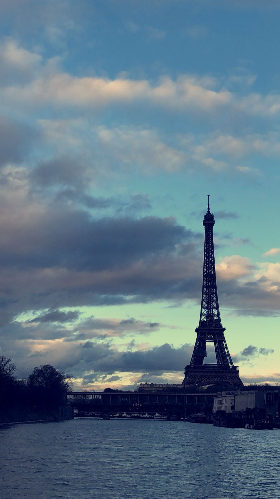

About Me
I am Batool Mohammed, a 23-year-old Computer Science Engineering student at the University of Debrecen. My aspiration is to pursue a master's and doctorate in the same field.
My Hobbies: Photography, Traveling, Design
Photography
Paris

Switzerland
Italy
"The world is a book and those who do not travel read only one page." - Saint Augustine
Traveling Experiences
I've traveled to various countries around the world and each experience has been unique and memorable.
From exploring the historic streets of Rome to trekking through the lush landscapes of Switzerland, every destination has left a lasting impression on me.
Through traveling, I've gained a deeper appreciation for different cultures, cuisines, and ways of life.
Design Projects
Designing is not just a hobby for me, it's a passion. Here are some of the design projects I've worked on:
- Logo designs for local businesses
Favorite Destinations
Here are some of my favorite destinations that I've visited:
- France, Paris
- Belgium, Brussels
- Italy, (verona,sirmione,venice,milan,roma)
- Switzerland, interlaken
- Austria, tirol
Each of these places holds a special place in my heart and has contributed to my love for traveling.